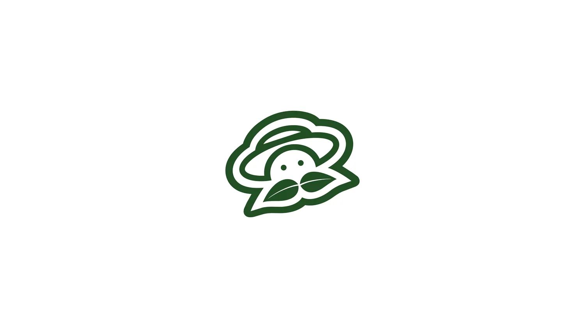
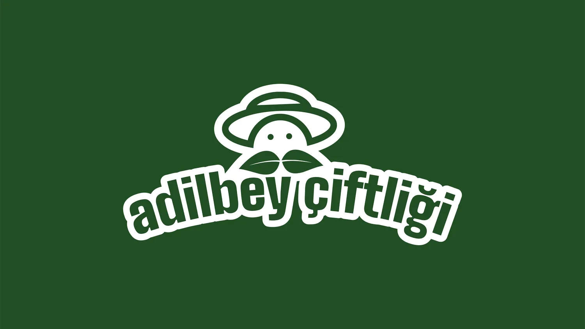
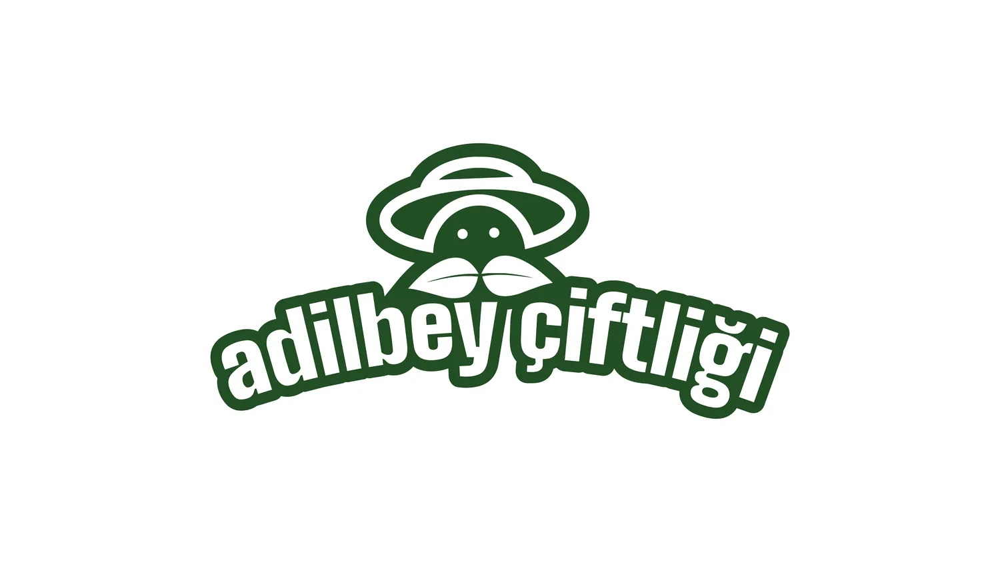
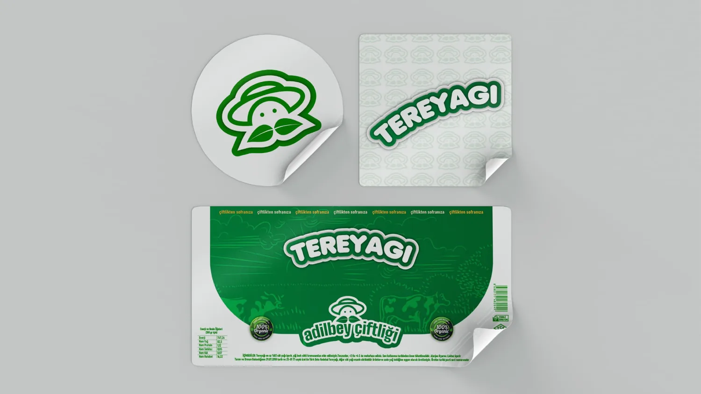
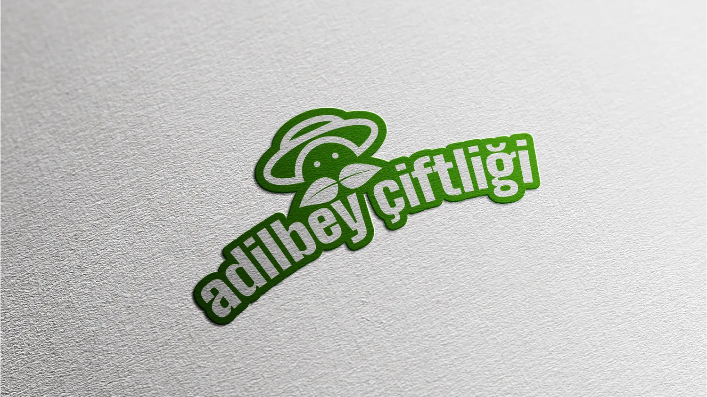
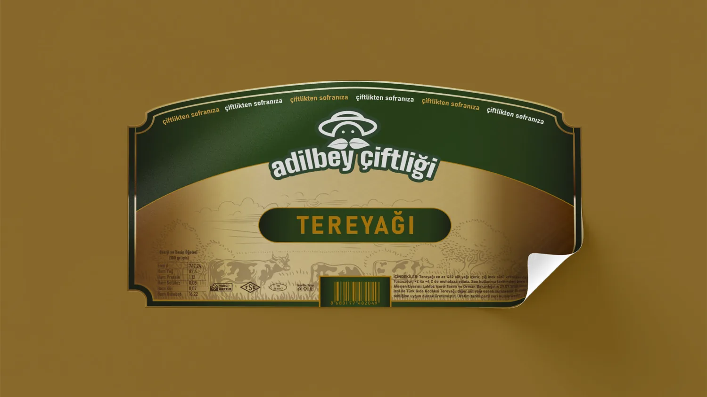
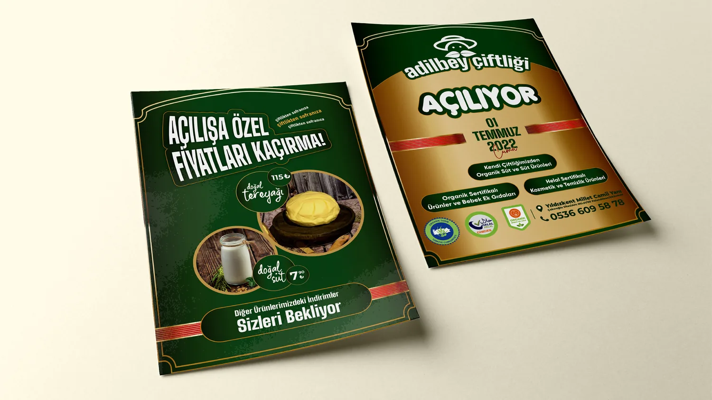
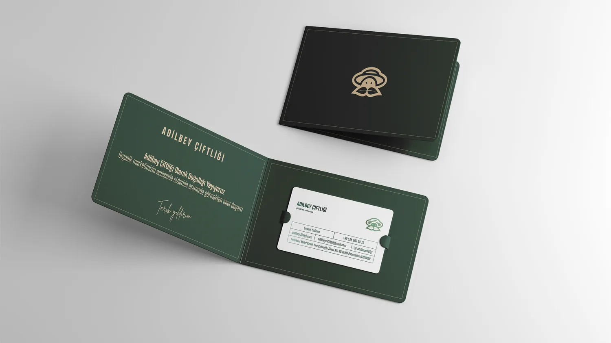
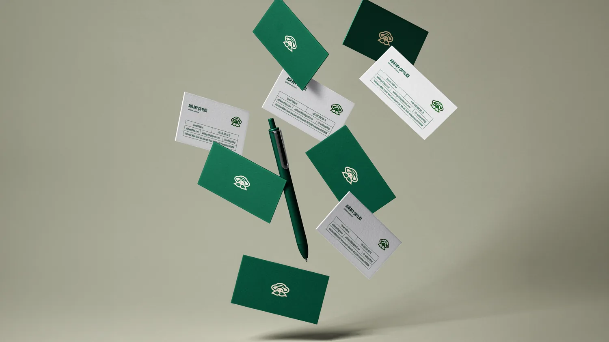
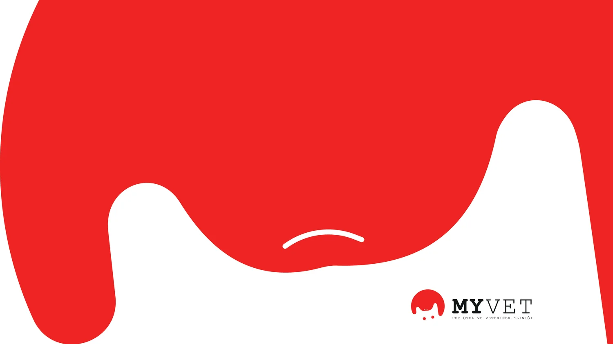

Türkiye
Adilbey Çiftliği
Çiftlik ve süt ürünleri üreticisi Adilbey Çiftliği’nin kimliği. Logo, şapkalı çiftçi yüzünü, bıyığını oluşturan iki yaprakla birleştirir; özgünlüğü, toprağa bağlılığı ve doğal ürünü ifade eder. Kimlik; koyu yeşil ve altın renklerle ambalaj etiketlerine, el ilanlarına ve kartvizitlere uzanır.








MYVET
